În stînga este slide-ul din curs, în dreapta aceeași figură, calculată în browser din aceleași date. Butonul ▶ modifică parametrul pas cu pas.
Activele digitale și piața lor · Faptele stilizate ale randamentelor cripto · Indici cripto: CRIX · Stablecoin-uri · DeFi și formatorii automați de piață · ETF-uri spot și acțiuni „cripto” · Cripto-activele ca active alternative · Studiu de caz: factorii de risc comuni ai criptomonedelor · AI pentru descoperire științifică
Activele digitale și piața lor
Cinci monede, un activ dominant
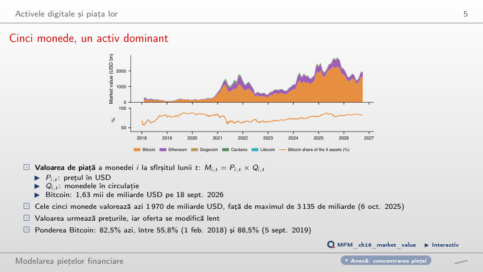
Răspuns
Aproximativ 90,4%: 2 × 0,825 / (2 × 0,825 + 0,175) = 0,904. Cantitățile constante nu înseamnă ponderi valorice constante. Varianta 91,25% adaugă jumătate din ponderea celorlalte monede, în loc să recalculeze valoarea totală. În date, ponderea Bitcoin a variat între 55,8% (1 feb. 2018) și 88,5% (5 sept. 2019); pe 18 septembrie 2026, Ethereum are 16,2%, iar valoarea totală a celor cinci monede este 1 970 de miliarde USD.
Faptele stilizate ale randamentelor cripto
Volatilitatea în timp
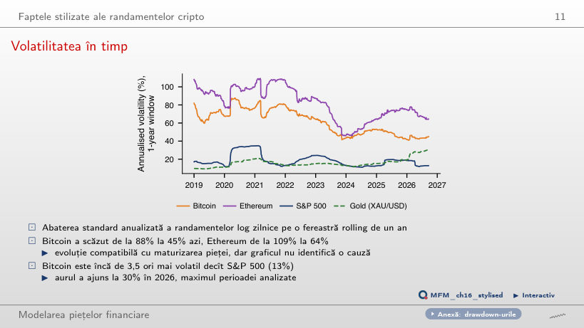
Răspuns
Aproximativ 12,2. Varianța este pătratul volatilității: (45,1% / 12,9%)² ≈ 3,5² ≈ 12,2. Varianta 3,5 confundă varianța cu abaterea standard; 1,9 aplică încă o rădăcină pătrată. Volatilitatea anualizată a Bitcoin a scăzut de la maximul de după 2019, 88%, la 45%, iar cea a Ethereum de la 109% la 64%. Scăderea este compatibilă cu maturizarea pieței, dar graficul nu identifică o cauză.
O piață de 7 zile, cu volatilitate redusă în weekend
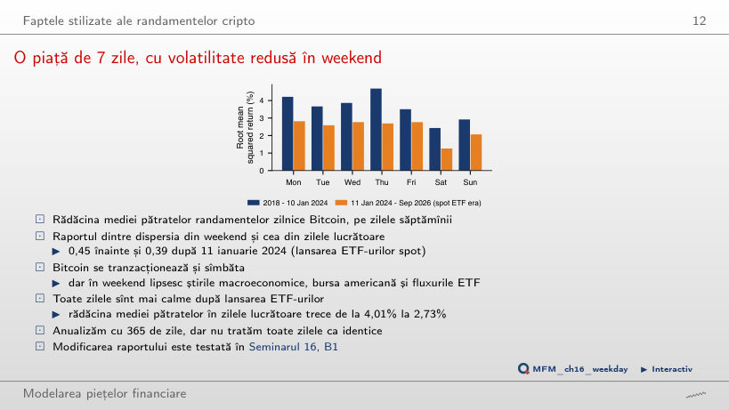
Răspuns
Aproximativ 0,62: √0,39 ≈ 0,62. Varianta 0,39 păstrează raportul varianțelor; 1,60 inversează comparația. Înainte de 11 ianuarie 2024, raportul varianțelor este 0,45. Graficul prezintă rădăcina mediei pătratelor pe zile ale săptămînii, o măsură distinctă: în zilele lucrătoare ea scade de la 4,01% la 2,73%. În weekend bursa americană este închisă și fluxurile ETF lipsesc; diferența înainte/după nu demonstrează un efect cauzal al ETF-urilor.
Corelația dintre Bitcoin și acțiuni
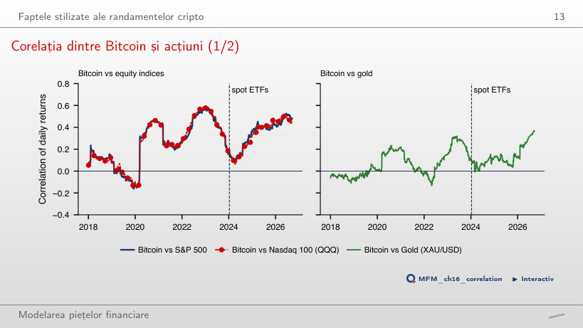
Răspuns
Creșterea precedă lansarea, iar comparația stabilește ordinea temporală, nu mecanismul. În regresia separată a randamentelor Bitcoin pe S&P 500, testul sup-Wald respinge absența unei rupturi a coeficienților (sup W = 20,12), iar data care minimizează SSR este 9 martie 2020. Cu aurul, corelația crește de la −0,02 la 0,12 și apoi la 0,22.
Indici cripto: CRIX
Indicii cripto din 2018
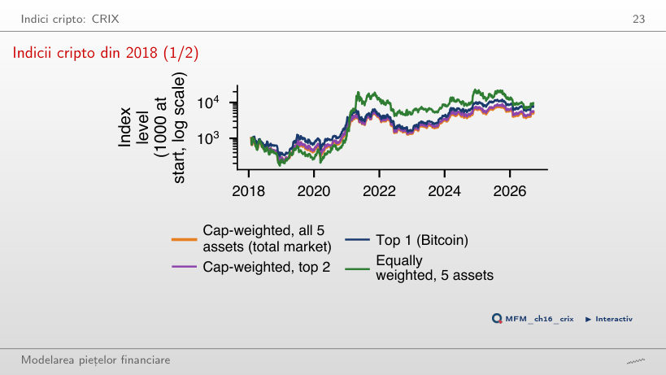
Răspuns
Nu. Diferența este concentrată în 2021, cînd indicele cu ponderi egale a crescut cu 998%, iar cel ponderat cu valoarea de piață cu 113%. Volatilitățile sînt 82,5% și 65,7%; CAGR-ul nu este o măsură ajustată la risc. Cele cinci monede sînt alese ex post, dintre supraviețuitorii de azi: universul comun nu elimină problema selecției (survivorship bias).
Stablecoin-uri
Abaterile de la 1 USD
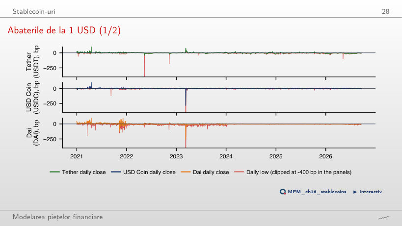
Răspuns
Zilele cu abatere peste 100 pb sînt o submulțime a celor cu abatere peste 50 pb. Numărul lor trece de la 3 la 1 pentru Tether, de la 3 la 2 pentru USD Coin și de la 12 la 3 pentru Dai, în 2021–2026. Abaterea standard a închiderii este 7,3 pb, 7,5 pb și, respectiv, 10,8 pb, dar cozile sînt grele: episoadele de stres sînt rare, nu imposibile. Calculul folosește închiderile; minimul zilnic al USD Coin a fost −1 226 pb, pe 11 martie 2023.
Martie 2023: falimentul unei bănci afectează USD Coin
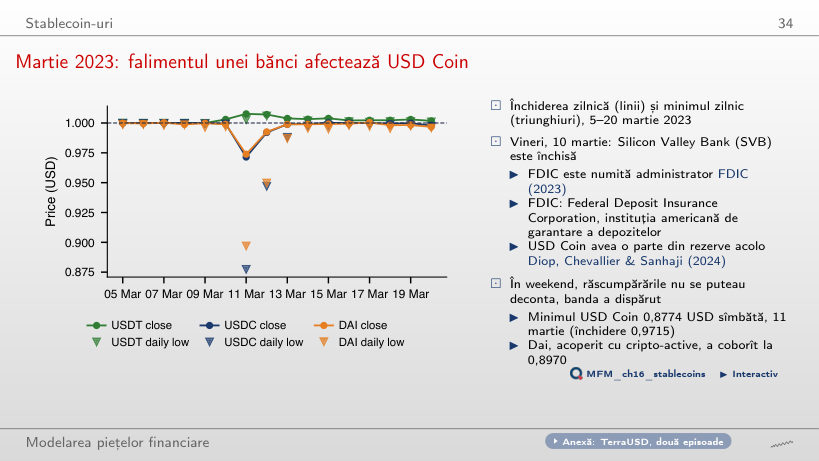
Răspuns
Nu. Prețul sub 1 USD nu garantează încasarea unui dolar. Incertitudinea privind rezervele aflate la Silicon Valley Bank, închisă vineri, 10 martie, și lipsa decontării în weekend limitau mecanismul de răscumpărare care ține prețul în bandă. Minimul zilnic, 0,8774 USD, este distinct de închiderea de 0,9715 USD. Dai, acoperit cu cripto-active, a coborît la 0,8970 USD, iar Tether a rămas deasupra parității.
DeFi și formatorii automați de piață
Valoarea totală blocată în DeFi
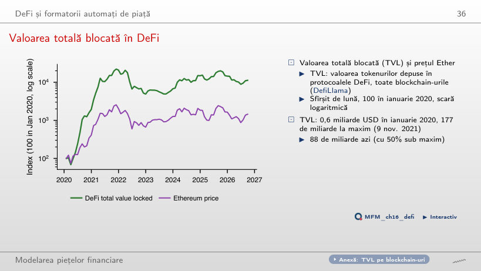
Răspuns
0,079 = 0,79 × 0,10. R² măsoară proporția variației explicate în eșantion, nu panta; varianta 0,062 le confundă. Varianta 0,10 presupune o relație unu-la-unu. Estimarea folosește 79 de luni complete, cu SE Newey–West 0,066. TVL este valoarea tokenurilor depuse, deci se mișcă mecanic cu prețul lor; regresia nu identifică un efect cauzal. TVL a crescut de la 0,6 miliarde USD în ianuarie 2020 la 177 de miliarde pe 9 nov. 2021 și este azi 88 de miliarde.
Un furnizor de lichiditate într-un pool Ether
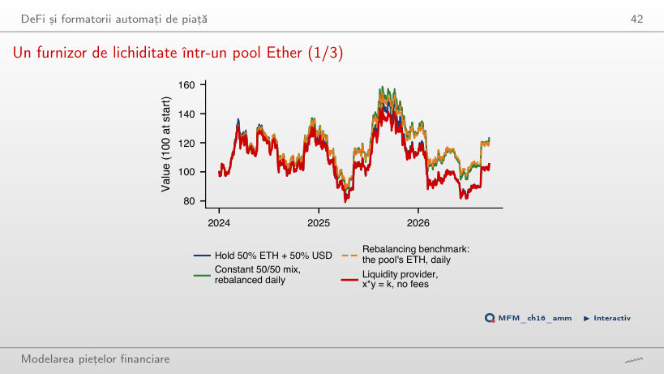
Răspuns
IL depinde doar de raportul r dintre prețul final și cel inițial și este zero pentru r = 1. LVR se acumulează pe traiectorie, la fiecare variație de preț. În eșantion, Ether încheie la r = 1,11: pool-ul valorează 105,4, deținerea 105,5 (IL −0,14%), iar reperul de reechilibrare 122,4. Rata LVR realizată este 5,83% pe an, iar aproximația σ²/8 este 5,79% (σ = 68,1%). Comisionul capitalizat care aduce pool-ul la valoarea finală a reperului în simulator este aproximativ 5,5% pe an; sînt mărimi diferite.
ETF-uri spot și acțiuni „cripto”
IBIT replică Bitcoin
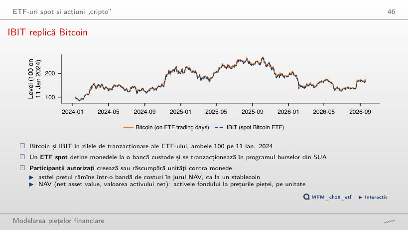
Răspuns
Logaritmul raportului IBIT/Bitcoin scade cu 0,24% pe an, aproape de comisionul anual de 0,25%. Pe 18 septembrie 2026, IBIT este la 172,8, iar Bitcoin la 174,5 (ambele 100 pe 11 ian. 2024). ETHA are același drift, −0,24% pe an.
Randamentele zilnice, cele săptămînale și beta Dimson
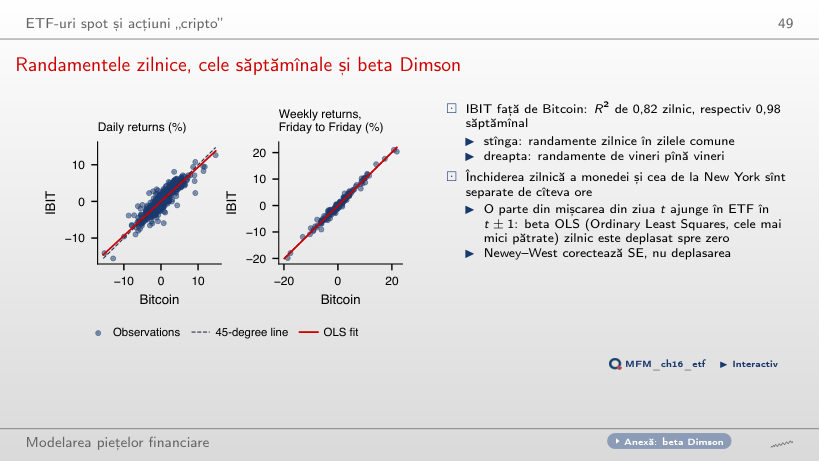
Răspuns
Crește de la 0,82 la 0,99, iar beta de la 0,93 la 0,99, pe 67 de observații nesuprapuse. Panoul săptămînal folosește randamente de vineri pînă vineri și dă R² = 0,98 și beta = 1,01. Închiderea zilnică a monedei și cea de la New York sînt separate de cîteva ore, deci o parte din mișcarea din ziua t ajunge în ETF în ziua t ± 1; decalajul contează relativ mai puțin la orizonturi lungi. Creșterea R² nu este monotonă la fiecare pas.
Cripto-activele ca active alternative
Cripto-activele printre celelalte clase de active
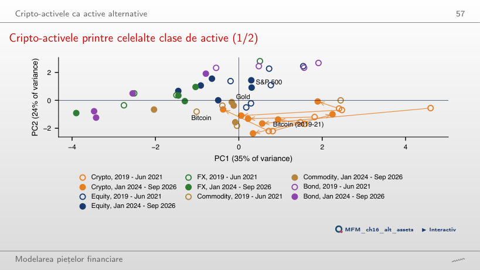
Răspuns
Estimarea indică apropiere, dar intervalul nu exclude absența deplasării. Semnul estimării nu stabilește semnificația, iar includerea lui zero nu dovedește egalitatea. Distanța se măsoară în spațiul celor opt caracteristici standardizate, nu doar în proiecția PC1–PC2: față de acțiuni scade de la 3,03 la 2,63, față de mărfuri de la 2,26 la 1,86, iar dispersia cripto-activelor în jurul centrului lor de la 2,13 la 1,43. Intervalul este orientativ, pentru că unele caracteristici cer momente finite discutabile aici, și nu se transferă automat la variantele cu o caracteristică omisă, pentru care bootstrap-ul nu este recalculat.
Studiu de caz: factorii de risc comuni ai criptomonedelor
Studiu de caz: Tabelul 1 refăcut pe datele cursului
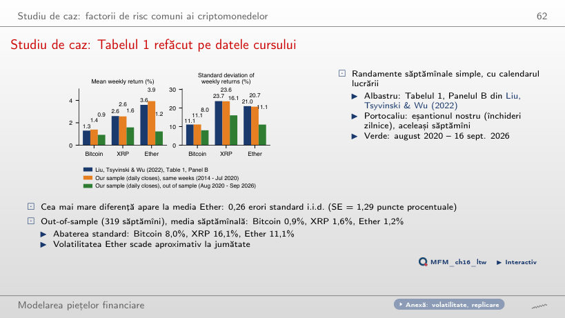
Răspuns
Nu. Reproducerea pe aceleași săptămîni cere calendarul lucrării, pînă în iulie 2020; extinderea schimbă eșantionul și poate schimba momentele estimate. La separarea din iulie 2020, cea mai mare diferență față de Tabelul 1, la media Ether, este de 0,26 erori standard i.i.d.; aceasta nu dovedește egalitatea parametrilor. Out-of-sample (319 săptămîni), mediile săptămînale sînt mai mici (Bitcoin 0,9%, XRP 1,6%, Ether 1,2%), iar abaterea standard a Ether scade de la 20,7% la 11,1%.
Studiu de caz: prețul și hashrate-ul Bitcoin, 2010–2026
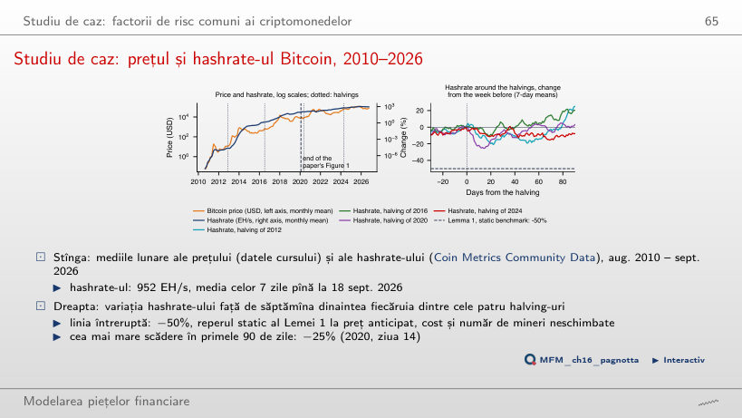
Răspuns
Nu o poate infirma singură. Reperul de −50% presupune cost liniar, înjumătățirea recompensei și preț anticipat, cost unitar și număr de mineri constante; datele includ ajustarea dinamică, comisioanele și schimbarea prețului. După 30 de zile, recompensa în USD pe bloc scăzuse cu 45% (2012), 56% (2016), 48% (2020) și 52% (2024), iar hashrate-ul s-a schimbat cu −10%, +4%, −5% și −8%. Ziua 30 nu descrie întregul interval: în ziua 90, hashrate-ul este cu 25% (2012) și 20% (2016) peste nivelul dinaintea halving-ului. Pe nivele, elasticitatea față de recompensa în USD pe bloc, cu trend, este 1,19 în fereastra lucrării și 0,03 după ianuarie 2020, o asociere descriptivă; testul Engle–Granger nu respinge absența cointegrării în niciuna.
AI pentru descoperire științifică
Mini studiu de caz: efectul ETF-urilor asupra corelației
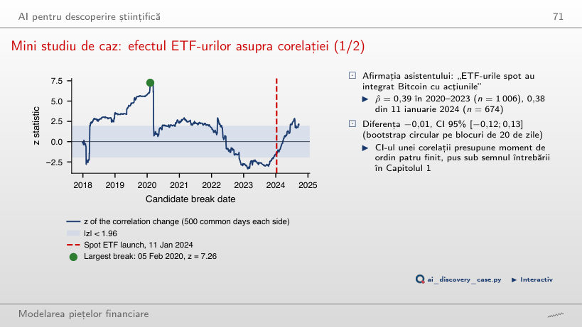
Răspuns
Nu. Sînt scanate 1 694 de date candidate, cu ferestre care se suprapun, iar maximul pe aceste date cere o valoare critică proprie. Banda ±1,96 este punctuală și orientativă în prezența cozilor grele și a dependenței. Maximul este pe 5 februarie 2020; la data ETF, z = −1,48, iar 82% dintre datele candidate dau un |z| cel puțin la fel de mare. Scanarea este descriptivă; testul sup-Wald din curs privește ruptura coeficienților regresiei și nu dă valoarea critică a maximului acestei scanări.
Prețuri zilnice EODHD (cripto-active, stablecoin-uri, ETF-uri, S&P 500, aur), pînă la 18 septembrie 2026. Oferta în circulație a monedelor: Coin Metrics Community Data. Valoarea totală blocată (TVL): DefiLlama. Tabelul 1: Liu, Tsyvinski și Wu (2022), Journal of Finance. Hashrate-ul și monedele emise zilnic: Coin Metrics Community Data; Lema 1: Pagnotta (2022), Review of Financial Studies.